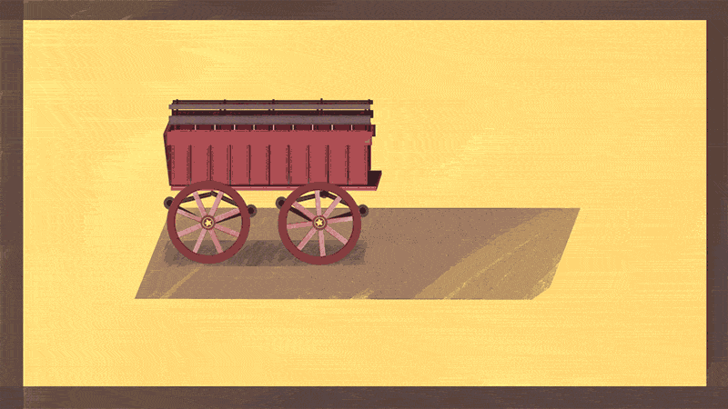
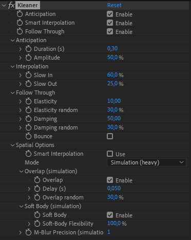

Kleaner and Spring
Kleaner and Spring
The Kleaner is a tool to automatically clean the selected animations.
It removes unnecessary keyframes (keyframes which do not result in any animation), and generates and controls anticipations, interpolations and follow-through of the animations.
With the kleaner, you don’t have to work on keyframes interpolations anymore, and you don’t even have to animate anticipations and follow-through by hand. You just have to add some keyframes, keep them linear, and tweak the settings of the kleaner, which will automatically generate all of these for you.
After having removed unnecessarry keyframes, it works with an expression which is controlled by an effect.

Use
- Select the keyframes of the animation you want to clean.
- Click on the
 Kleaner or the
Kleaner or the  Spring button.
Spring button.
One effect is created for all selected properties of the same layer. That means all properties will be controlled by the same values. If you need different values for several properties, create a new kleaner for each one of them.
Note
Using the Spring button instead of the Kleaner button does not change the effect which is applied, it is exactly the same. The only difference is in the default values of the effect: with the spring, the anticipation and smart interpolation are disabled, and the spatial options are set to Basic instead of Simulated.
Effect

The effect is used to control each part of the animation.

Within the effect, you can teak each part with individual settings. The Kleaner will automatically adapt to your animation.

Use the checkboxes to (de)activate any part of the automation, and adjust the details in each section.
Tip
You can animate these checkboxes to use anticipation or follow through only at specific times of your animation.

Anticipation
The anticipation is the motion which happens before the beginning of the actual animation. It should happen only on living characters, inanimate objects don’t have anticipation in their movements.
You can adjust the duration (in seconds) and the amplitude of this specific movement.
Interpolation
The kleaner automatically smoothes your animation, and the result is very fluid. Adjusting the Slow In and Slow Out values changes the way the animation starts and stops, or makes sharp turns.
Usually, a living character has a lower Slow Out and a higher Slow In. These values also change depending on the weight of the object: heavier objects and characters have higher Slow Ins and Outs.
Follow Through
Follow Through happens when the animation comes to a stop; it’s the momentum of the object, which makes it “bounce” at the end of the movement, going a bit to far away and getting back to its stop.
-
The elasticity controls the frequency and the amplitude of this motion. A higher elasticity generates a faster and smaller movement.
-
The Damping controls how long it takes for the animation to fully stop. A higher value will make it stop sooner. At 0, the movement never stops.
For both these values, you can add some randomness: this means each property controlled by this kleaner effects will have a slightly different motion, which looks more natural.
Use the bounce checkbox to make the object bounce back at the value where it should stop, like a ball bouncing on the floor.

The bounce algorithm will make sure each bounce won’t happen in-between frames to make sure the contacts between objects are visible.
Spatial options
For multi-dimensionnal properties, you can adjust the spatial options. By default, the kleaner will not adjust the interpolation of these, letting you work the trajectories in After Effects.
Tip
Use the kleaner on some Puppet Pins and switch the mode to “Simulation”, then animate the position of the layer. This is a quick and easy way to animate soft bodies!
Spatial Simulation Mode
When set to the “Simulation” mode, the follow through of the spatial properties will take the real movement of the layer into account when it’s computed (and not only the keyframes of the property). The simulation also activates more options and behaviour for the property:
-
Overlap/drag: This is another important animation principle: each property moves a bit after its parent. When this option is enabled, the Kleaner will adjust the movement of the spatial properties according to the movement of the parents of the layer, so they will have some overlapping motion. You can set the duration of this overlap.
-
Soft Body: when this option is enabled, the Kleaner automatically adjusts the follow-through parameters and the overlap duration of the spatial properties according to their distance to the anchor point of the layer. This means there’s a short overlap between the spatial properties and the layer itself, and their elasticity will be a bit lower. This can be adjusted with the flexibility slider.
If you need to activate the motion blur for the layer, you may need to raise the Motion Blur precision if the Kleaner is in “Simulation” Mode.
Hint
All these values can be animated!
Additional Panel

- Remove unnecessary keyframes:
Check or uncheck the checkbox to activate or deactivate this step when you run the “Kleaner” - Separate Dimensions:
In case you add the kleaner on multi-dimensionnal properties, you can check this option to separate the dimensions first, and control separately each axis.